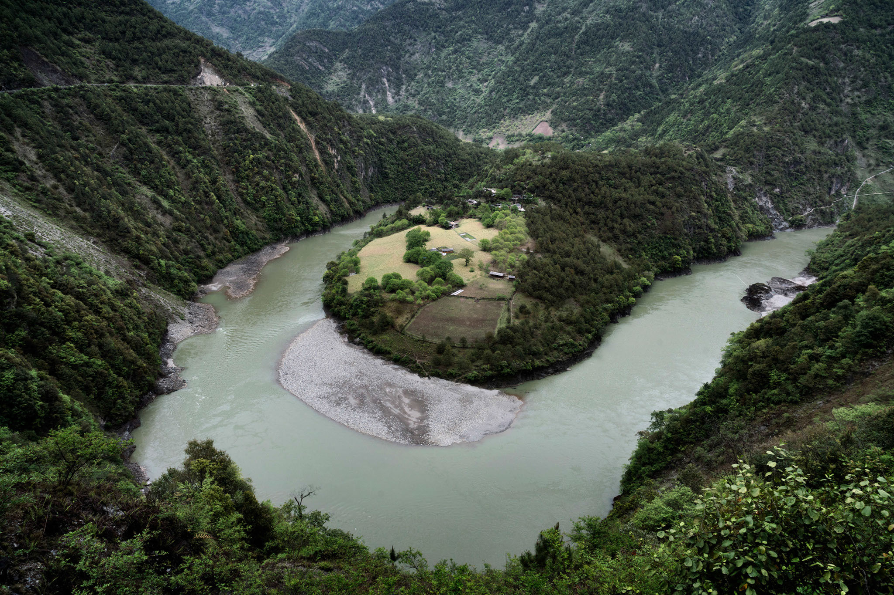

Story
The story is set to take place around the Eastern Han Dynasty. A devil inhabited the Nu river, which caused the people living near the river to be plagued with diseases. The parent of a young man, named Hengjing, died because of the devil's magic and the diseases destroying his village. After his parent died the man seeked to find a way to rid the devil from the river. So he sought out for an immortal to teach him swordsmanship in order to expel the devil from the Nu river.

The immortal told the man to take dogwood and chrysanthemum wine back to his village. He returned to the hometown on the morning of double 9th. Hengjing led his villagers to the river to confront the devil. Each person holding a piece of dogwood leaf and a cup of Chrysanthemums to the nearest mountain. The devil then rose out of the river. The devil was stopped by the scent of Chrysanthemums and dogwood. The devil distracted by the smell was opened to attacks by Hengjing and was able to win the duel against the devil.